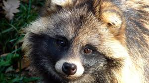
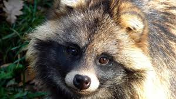

| Animal | Locale | Life Expectancy | Cuteness |
|---|---|---|---|
| Cat | Everywhere | 12-17yrs | 10.1 / 10 |
| Tanuki | Japan, I think | 3-5yrs | 10 / 10 |
| Turtle | The Ocean | 1-? yrs | 9.9 / 10 |
 A pretty playful kitten

A quietly curious tanuki
A pretty playful kitten

A quietly curious tanuki
 A bobbing baby turtle
A bobbing baby turtle
Cute stuff. That's what we've got on the agenda today, and it won't be just your average, everyday, run-of-the-mill, your-coworker-has-a-new-baby-and-you're-legally-obligated- to-make-oohs-and-ahs cute stuff. We're talking about the really cute stuff. Not just babies. Not just animals. But Baby. Animals.
Now, our goal here is to crown a king (or queen or gender non-conforming ruler). We're looking for the Supreme Overlord of Saccharine, the Sultan of Sweet, the Leader of Little-Itsy-Bitsy-Cutesiness. So we're going to be stacking up a few of our contenders against each other in order to determine which baby animal reigns in this land, the United States of Americute. And to be honest, we've cut some animals out that normally perform pretty well in contests like this. No puppies (which means no baby pugs), no birds, no pandas, no goldfish (and if we're being blunt, they really only get by on memories anyway). No nothing but the following three.
We have kittens, turtles, and tanukis. And I know what you're thinking - how could I leave in kittens when I was willing to cut puppies? There are no wobbling baby horses, but we get a playful fuzzy creature that can't even get off its back? Surely that must be unfair? And to that I say - Yes. Yes it is. But I like kittens so they're staying on the list. Sue me. But in the meantime, appreciate the beauty that is kitten kind in the image stack to the right and then see if any of those questions matter more than seeing those little paws in the air.
All right. Now that we've sorted out our kitten controversy, you've got to be wondering, "what's a tanuki?" Probably. For all I know, you're a past master in tanuki talk, but I learned about them two days ago so I'm on a bit of high. And why did I add a turtle out of all the other existing fauna in this world? (Or flora in this world. I guess I never thought about cute plants. Huh.) Well, tanuki and turtle both start with 'T', and I'm a simple man. It seemed okay.
Also, as you ought to have realized by now with your eyes even if you haven't noticed the table we've got going on up and to the left or the way that I was describing kittens to start, we do indeed have a winner. Anticlimactic, sure, but with a contest like this, there really wasn't much chance from the start. I mean, tanukis do have interesting history. And they're certainly very cool to look at. And sea turtles did have that role in Finding Nemo. But we knew who was coming out on top in this competition from the top of this page. We knew it before we started reading. We knew it before I decided this blog would be kinda fun if I wrote it about cute stuff. It's kittens. Of course. And can you blame me?